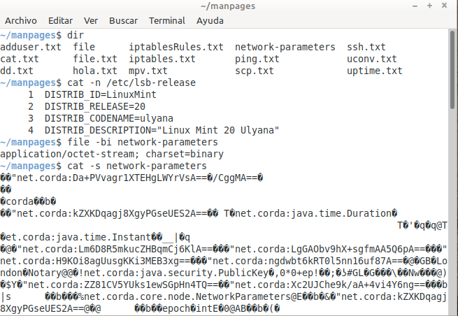

Leer-crear archivos desde la terminal > cat¶
Nombre del comando: cat
Man page online: https://linux.die.net/man/1/cat
Descripción: Leer y crear archivos de texto o unirlos para mostrarlos en la terminal. Cat siempre imprime el contenido de cualquier archivo en la terminal, pero existen archivos que el ojo humano no puede interpretar, tal es el caso de los archivos binarios, por lo tanto, es mejor leer archivos de texto.
Man page local: $ man cat o $ man cat > cat.txt
Instalado por defecto: Sí, al menos en Linux Mint.
Algunas Opciones:
-b, --number-nonblank Imprimir los números de las lineas del archivo que no estén vacías.
-n, --number Imprimir los números de todas las líneas del archivo.
-s, --squeeze-blank Eliminar líneas vacías duplicadas. Si en un archivo de texto hay muchas líneas vacías entre cada párrafo, al colocar esta opción las elimina dejando únicamente una línea vacía.
Ejemplo 1: $ cat -n /etc/lsb-release, en este ejemplo leo un archivo de texto del sistema operativo y que muestre el número de líneas. En la imagen de arriba también he leido un archivo binario.
Ejemplo 2: $ cat > hola2.txt, en este ejemplo creo un archivo de texto en la carpeta actual. Al crear un archivo con “cat” inmediatamente permite agregar su contenido directamente desde la terminal, una vez se agrega su contenido se teclea control mas la tecla “c” del teclado para terminar.
Ejemplo 3: $ cat hola.txt hola2.txt, en este ejemplo combino el contenido de dos archivos de texto y lo imprime en la terminal. Se puede combinar la cantidad de archivos deseados, solo hay que escribirlos separados por un espacio.
Ejemplo 4: $ cat | date > TodayDate.txt, en este ejemplo creo un archivo de texto y le inserto la fecha actual del sistema. Si el archivo “TodayDate.txt” existe, entonces sobreescribirá todo su contenido por la fecha actual.
Ejemplo 5: $ cat | date >> TodayDate.txt, en este ejemplo le inserto la fecha actual del sistema en una nueva línea al archivo existente “TodayDate.txt”.